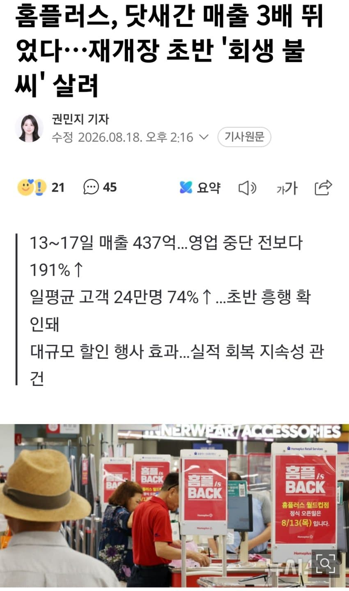
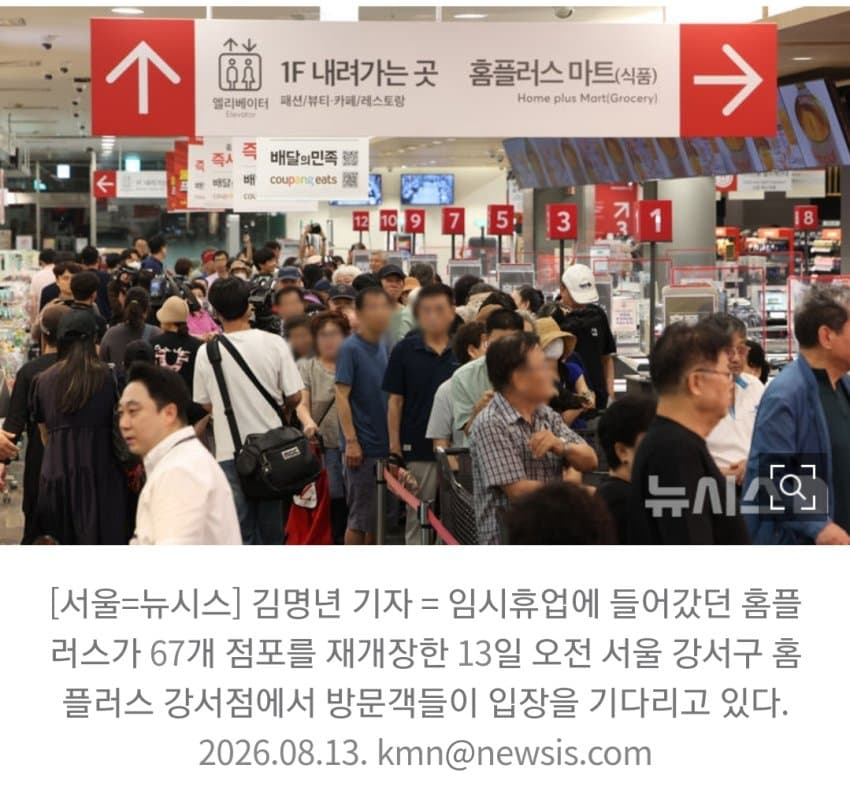
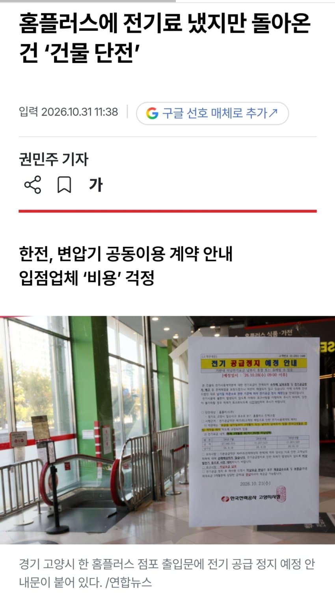
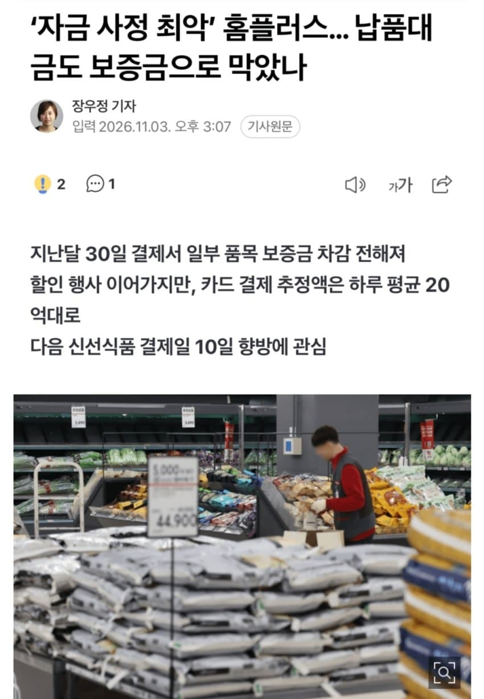
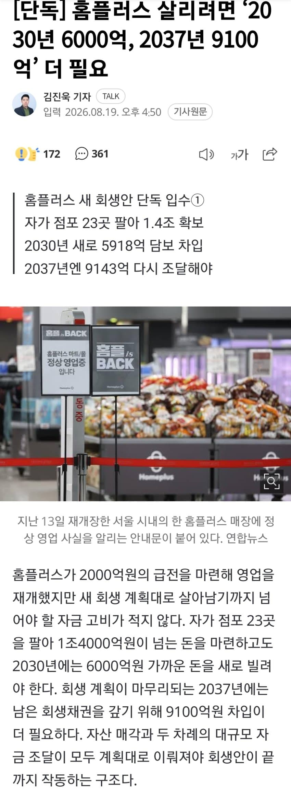
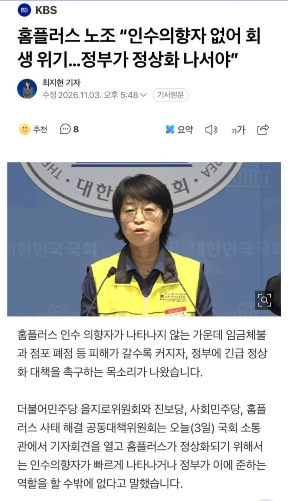
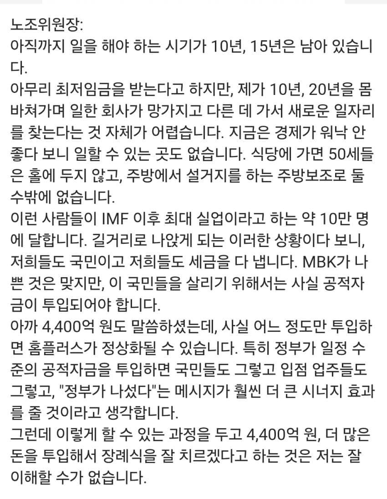
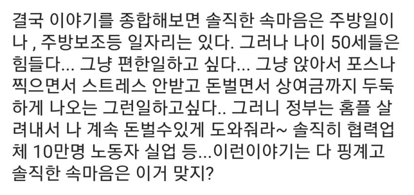
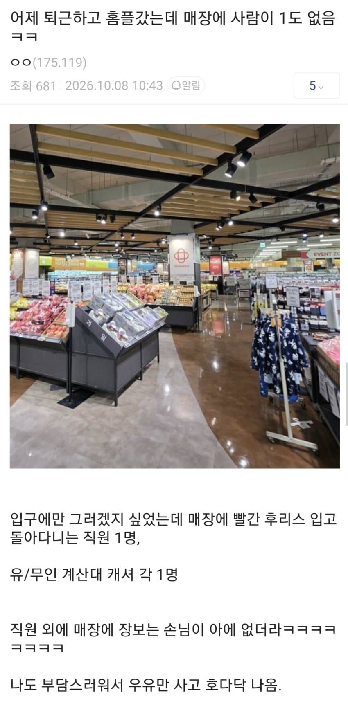
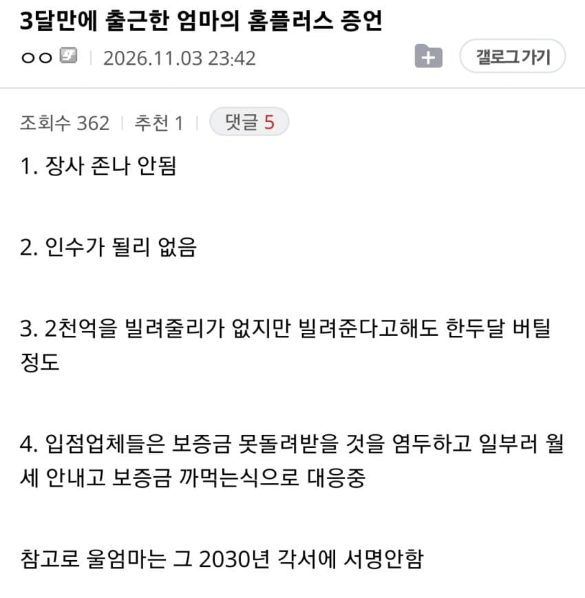

지난 8월 2천억 긴급수혈 받고 재개장한 홈플러스 일부 폐장한 매장도 있었지만 나름 손님도 몰리고 이대로 다시 부활하나 싶었지만

건물 단전 소식이 들리더니

현재 자금 사정이 최악이라고

저번 회생안 보면 매장 23곳 팔고 추가로 1.5조 규모의 대출이 필요한 상황
이미 내리막길인 마트 사업+ 빚부터 갚아야 하는 기업+ 강성 노조 있는 기업인데 저걸 누가삼
그래서 노조들은 정부에서 도와달라 하는 중


이걸 본 일침 글

사실 식당이 아니어도 공장이나 물류센터, 쿠팡, 다이소만 가면 중년여성도 일 할 수 있는곳 많음 문제는 이미 존재하는 고인물 파벌이 존재하고 이 텃세랑 눈치밥을 견딜 자신이 없단거지 본인들은 이미 홈플에선 고인물이었는데


아무튼 현재는 사람들 발길 좀 끊겼다함
백룸 시절보단 물건이 많이 채워진편이긴 해도 타사 대형마트나 식자재마트 등이랑 비교하면 없는 물건이 너무 많다고..근데 이마저도 납품대금 줄 돈 없어서 어떻게 될 지 모름
댓글
수집 당시 댓글 280개
ㅇㅇ · 11.04 21:59:28
ㅇㅇ · 11.04 21:59:53
실갤러 · 11.04 21:59:54
실갤러 · 11.04 22:00:24
ㅁㄴㅇㄹ · 11.04 22:03:20
유류유우률류우류류 · 11.04 22:04:21
· ㅇㅇ · 11.04 22:22:16
문디배설 · 11.04 22:10:24
ㅇㅇ · 11.04 22:12:11
· ㅇㅇ · 11.04 22:22:11
· ㅇㅇ · 11.04 23:17:27
· 해석가 · 11.04 23:59:53
ㅇㅇ · 11.04 22:14:35
· 해석가 · 11.05 00:02:37
ㅇㅇ · 11.04 22:17:30
ㅇㅇ · 11.04 22:17:34
· 12 · 11.05 15:16:53
ㅇㅇ · 11.04 22:22:22
· ㅇㅇ · 11.04 22:23:02
ㅇㅇ · 11.04 22:25:17
· ORZ · 11.04 22:50:14
ㅇㅇ · 11.04 22:25:42
Mernerner · 11.04 22:36:36
Mernerner · 11.04 22:38:02
ㅇㅇ · 11.04 22:41:27
11 · 11.04 22:46:38
ORZ · 11.04 22:48:37
ㅇㅇ · 11.04 22:50:33
ㅇㅇ · 11.04 22:50:46
ㅇㅇ · 11.04 22:51:22
ㅇㅇ · 11.04 22:53:34
· ㅇㅇ · 11.04 22:55:20
ㅇㅇ · 11.04 23:01:30
음부털 · 11.04 23:04:23
ㅇㅇ · 11.04 23:05:37
ㅇㅇ · 11.04 23:40:34
ㅇㅇ · 11.04 23:51:19
ㅇㅇ · 11.04 23:56:13
ㅇㅇ · 11.05 00:02:55
환란 전 교회 휴거 · 11.05 00:04:32
ㅇㅇ · 11.05 00:08:11
ㅇㅇ · 11.05 00:09:27
ㅇㅇ · 11.05 00:10:33
· ㅇㅇ · 11.05 00:11:18
ㄴㅇㄹ · 11.05 00:17:25
ㅇㅇ · 11.05 00:31:36
ㅇㅇ · 11.05 00:34:21
ㅇㅇ · 11.05 00:45:21
ㅇㅇ · 11.05 00:50:38
ㅇㅇ · 11.05 01:02:21
ㅇㅇ · 11.05 01:05:10
dㅇㅇd · 11.05 01:17:01
ㅇㅇ · 11.05 02:04:29
ㅇㅇ · 11.05 02:28:42
· ㅇㅇ · 11.05 02:44:51
ㅇㅇ · 11.05 02:28:48
ㅇㅇ · 11.05 02:34:10
ㅇㅇ · 11.05 02:46:50
· ㅇㅇ · 11.05 02:46:55
ㅇㅇ · 11.05 03:38:02
ㅇㅇ · 11.05 05:15:36
ㅇㅇ · 11.05 05:25:48
ㅁㅁ · 11.05 06:34:22
ㅇㅇ · 11.05 06:57:34
qwer · 11.05 07:17:43
ㅇㅇ · 11.05 07:19:26
ㅇㅇ · 11.05 07:19:48
ㅇㅇ · 11.05 07:34:59
정치질
노조는
· ㅇㅇ · 11.05 07:35:17
뒈지
세요
ㅇㅇ · 11.05 07:47:41
ㅇㅇ · 11.05 08:16:38
국민송장펀드 · 11.05 08:34:36
ㅇㅇ · 11.05 08:37:57
ㅇㅇ · 11.05 08:41:13
· ㅇㅇ · 11.05 10:48:27
ㅇㅇ · 11.05 09:10:25
ㅇㅇ · 11.05 09:11:37
ㅇㅇ · 11.05 09:19:33
서서원직 · 11.05 09:26:16
ㅇㅇ · 11.05 09:32:15
ㅇㅅㅇ · 11.05 09:39:24
Gloved 1 · 11.05 09:43:01
1212 · 11.05 09:43:54
ㅇㅇ · 11.05 09:46:53
ㅇㅇ · 11.05 09:53:31
ㅇㅇ · 11.05 10:02:53
ㅇㅇㅇ · 11.05 10:06:17
ORZ · 11.05 10:07:27
ㅇㅇ · 11.05 10:08:58
ㅇㅇ · 11.05 10:13:05
ㅇㅇ · 11.05 10:19:25
ㅇㅇ · 11.05 10:30:08
ㅇㅇ · 11.05 10:48:08
ㅇㅇ · 11.05 10:50:37
· ㅇㅇ · 11.05 10:59:16
ㅇㅇ · 11.05 11:17:10
ㅇㅇ · 11.05 11:50:30
ㅇㅇ · 11.05 11:51:59
ㅇㅇ · 11.05 16:54:24
ㅂㅈㄷㄱ · 11.05 23:39:16
ㅇㅇ · 11.04 20:43:13
· ㅇㅇ · 11.04 20:44:46
ㅇㅇ · 11.04 20:43:21
코스피의유쾌한반란 · 11.04 20:43:34
· ㅇㅇ · 11.04 21:09:50
ㅇㅇ · 11.04 20:43:36
ㅇㅇ · 11.04 20:44:40
· ㅇㅇ · 11.04 20:45:02
ㅇㅇ · 11.04 20:44:49
· ㅇㅇ · 11.04 21:11:01
ㅇㅇ · 11.04 20:45:18
좌좡면한그륵뭐그런쇼망 · 11.04 20:45:35
971 · 11.04 20:45:38
ㅇㅇ · 11.04 20:45:55
ㅇㅇ · 11.04 20:46:15
ㅇㅇ · 11.04 20:46:20
모포포 · 11.04 20:47:06
ㅇㅇ · 11.04 20:47:47
ㅇㅇ · 11.04 20:47:49
Neikos496 · 11.04 20:48:05
JungNu · 11.04 20:48:35
ㅇㅇ · 11.04 20:50:15
1 · 11.04 20:50:43
· ㅇㅇ · 11.04 21:50:54
ㅇㅇ · 11.04 20:50:54
ㅇㅇ · 11.04 20:51:05
ㅇㅇ · 11.04 20:51:47
다희누나사랑해 · 11.04 20:52:57
ㅇㅇ · 11.04 20:53:05
ㅇㅈㅇㅁ · 11.04 20:53:19
ㅇㅇ · 11.04 20:54:17
ㅇㅇ · 11.04 20:55:19
ㅇㅇ · 11.04 20:55:33
ㅇㅇ · 11.04 20:55:53
ㅇㅇ · 11.04 20:56:24
· ㅇㅇ · 11.04 23:23:20
ㅇㅇ · 11.04 20:56:29
ㅇㅇ · 11.04 20:56:30
ㅇㅇ · 11.04 20:58:04
· ㅇㅇ · 11.04 21:00:03
· ㅇㅇㅇ · 11.04 22:00:11
· ㅇㅇ · 11.04 23:09:33
ㅇㅇ · 11.04 20:58:09
1323 · 11.04 20:58:21
1323 · 11.04 20:58:49
ㅇㅇ · 11.04 21:00:34
ㅇㅇ · 11.04 21:01:26
ㅇㅇ · 11.04 21:01:30
ㅇㅇ · 11.04 21:01:47
· ㅇㅇ · 11.04 21:23:29
· ㅇㅇ · 11.05 01:08:10
· ㅇㅇ · 11.05 10:47:05
ㅇㅇ · 11.04 21:06:32
· ㅇㅇ · 11.04 21:11:46
ㅇㅇ · 11.04 21:07:11
ㅇㅇ · 11.04 21:10:58
ㅇㅇ · 11.04 21:12:15
ㅇㅇ · 11.04 21:16:46
ㅇㅇ · 11.04 21:17:10
ㅇㅇ · 11.04 21:17:13
ㅇㅇ · 11.04 21:18:31
ㅇㅇ · 11.04 21:19:25
DRAGON-LEE · 11.04 21:21:36
ㅇㅇ · 11.04 21:21:46
DRAGON-LEE · 11.04 21:21:50
· ㅇㅇ · 11.04 21:38:56
ㅇㅇ · 11.04 21:22:48
ㅇㅇ · 11.04 21:23:28
28. · 11.04 21:23:33
ㅇㅇ · 11.04 21:24:16
ㅇㅇ · 11.04 21:25:14
· ㅇㅇ · 11.04 21:25:36
ㄹㅇㅋㅋ
ㅇㅇ · 11.04 21:25:43
리마인 · 11.04 21:27:35
좆팡이 30대한녀 설거지 하라노 컄ㅋ
티뀨 · 11.04 21:36:24
ㅇㅇ · 11.04 21:37:51
ㅇㅇ · 11.04 21:38:12
ㅇㅇ · 11.04 21:38:54
찢플을
누가감
ㅇㅇ · 11.04 21:39:37
ㅇㅇ · 11.04 21:41:35
ㅇㅇ · 11.04 21:42:17
· ㅇㅇ · 11.04 21:42:35
· ㅇㅇ · 11.04 21:42:59
· ㅇㅇ · 11.04 22:02:58
· ㅇㅇ · 11.04 23:49:28
· ㅇㅇ · 11.05 03:58:16
· ㅇㅇ · 11.05 09:06:30
· ㅇㅇ · 11.05 09:19:18
ㅇㅇ · 11.04 21:44:28
qkfpt · 11.04 21:45:22
· ㅇㅇ · 11.04 21:48:56
ㅇㅇ · 11.04 21:49:27
ㅇㅇ · 11.04 21:51:02
ㅇㅇ · 11.04 21:51:43
노태문 · 11.04 21:53:42
ㅇㅇ · 11.04 21:53:56
ㅇㅇ · 11.04 21:54:15
ㅇㅅㅇ · 11.04 21:54:53
ㅇㅇㅇ · 11.04 21:56:22
ㅇㅇ · 11.04 21:58:30
개댇지 · 11.04 10:50:41
· ㅇㅇ · 11.04 10:52:47
· ㅇㅇ · 11.04 10:55:26
· ㅇㅇ · 11.04 20:48:39
· ㅇㅇ · 11.04 21:11:34
ㅇㅇ · 11.04 10:51:32
ㅇㅇ · 11.04 10:55:44
쫍쫍이 · 11.04 10:59:57
기침에칭! · 11.04 11:00:32
SEX머신 · 11.04 11:01:25
하카라 · 11.04 11:04:40
하카라 · 11.04 11:05:05
· ㅇㅇ · 11.04 20:49:30
ㅇㅇ · 11.04 11:05:27
· ㅇㅇ · 11.04 20:50:15
ㅇㅇ · 11.04 11:07:08
ㅇㅇ · 11.04 11:07:55
땨뗘(봇) · 11.04 20:25:05
실베도로롱 · 11.04 20:26:38
· 실베도로롱 · 11.04 20:26:51
· ㅋㅋ · 11.04 20:29:51
· ㅇㅇ · 11.04 20:39:25
ㅇㅇ · 11.04 20:26:48
· ㅇㅇ · 11.04 20:27:15
· ㅇㅇ · 11.04 20:32:19
· ㅇㅇ · 11.04 20:45:56
백도어킹 · 11.04 20:27:09
오무오무 · 11.04 20:27:10
ㅇㅇ · 11.04 20:27:15
ㅇㅇ · 11.04 20:27:24
ㅇㅇ · 11.04 20:27:25
ㅇㅇ · 11.04 20:27:52
· ㅇㅇ · 11.04 20:28:52
· ㅇㅇ · 11.04 20:55:18
ㅇㅇ · 11.04 20:28:10
ㅇㅇ · 11.04 20:29:19
ㅇㅇ · 11.04 20:29:23
ㅇㅇ · 11.04 20:29:28
ㅋㅋ · 11.04 20:29:30
· 실베도로롱 · 11.04 20:30:51
ㅇㅇ · 11.04 20:29:30
· ㅇㅇ · 11.04 20:29:46
· ㅇㅇ · 11.04 20:30:11
· ㅇㅇ · 11.04 20:32:49
ㅇㅇ · 11.04 20:30:30
ㅇㅇ · 11.04 20:30:40
ㅇㅇ · 11.04 20:31:10
ㅇㅇ · 11.04 20:31:20
ㅇㅇ · 11.04 20:31:36
ㅇㅇ · 11.04 20:32:03
ㅇㅇ · 11.04 20:32:15
· ㅇㅇ · 11.04 21:37:10
ㅇㅇ · 11.04 20:32:49
적당히좀
해라
언제까지
물고늘어져
· ㅇㅇ · 11.04 20:33:37
대통령이
거기까지
해줬으면
알아서좀해
ㅇㅇ · 11.04 20:32:58
ㅇㅇ · 11.04 20:33:27
ㅇㅇ · 11.04 20:33:49
재~명~
ㅇㅇ · 11.04 20:34:20
ㅇㅇ · 11.04 20:34:27
ㅇㅇ · 11.04 20:34:29
ㅇㅇ · 11.04 20:34:45
ㅇㅇ · 11.04 20:35:14
ㅇㅇ · 11.04 20:35:18
· ㅇㅇ · 11.04 20:35:37
1찍
마트
ㅇㅇ · 11.04 20:35:29
ㅇㅇ · 11.04 20:35:42
ㅇㅇ · 11.04 20:35:46
ㅇㅇ · 11.04 20:36:00
· ㅇㅇ · 11.04 20:36:09
얼탱
ㅇㅇ · 11.04 20:36:20
드루와함께 · 11.04 20:36:26
ㅇㅇ · 11.04 20:37:00
시다 · 11.04 20:38:22
ㅇㅇ · 11.04 20:40:52
· ㅇㅇ · 11.04 21:37:49
ㅇㅇ · 11.04 20:41:20
· ㅇㅇ · 11.04 20:41:25
kawa · 11.04 20:42:52
· ㅇㅇ · 11.04 20:43:32
ㅇㅇ · 11.04 20:43:10